온실가스관리기사 (2015-05-31 기출문제)
1과목: 기후변화개론
1. 국가 기후변화 적응대책을 7개 부문별 적응대책과 3개 적응기반 대책으로 분류할 때, 다음중 적응기반 대책에 해당하지 않는 분야는?
- 기후변화감시예측 분야
- 적응산업에너지 분야
- 교육홍보국제협력 분야
- 해양수산업 분야
(정답률: 65%)

2. 온실효과 및 지구환경과 관련된 다음 글에서 ( )안에 들어가는 수치가 순서대로 옳게 가장 적합하게 나열된 것은?
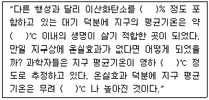
- 0.3, 18, 45, 15
- 0.3, 15, 18, 33
- 0.03, 18, 45, 15
- 0.03, 15, 18, 33
(정답률: 63%)
3. 기후변화 시나리오 예측을 위한 기후모델에 관한 설명으로 옳지 않은 것은?
- 지구의 기후시스템은 대기권, 수권, 빙권, 지권 및 생물권으로 구성된다.
- 구성요소들 간의 물리과정, 상호작용, 에너지, 물 및 물질순환을 이룬다.
- 기후과정 외에 인위적인 영향은 배제된다.
- 기후시스템은 비선형성에 의한 카오스적인 특성을 나타낼 것으로 알려졌다.
(정답률: 82%)
4. 기후변화와 관련된 복사법칙 중 “주어진 온도에서 이론상 최대에너지를 복사하는 가상적인 물체를 흑체라 할 때 흑체복사를 하는 물체에서 방출되는 복사에너지는 절대온도(K)의 4승에 비례한다” 는 법칙은?
- 알베도의 법칙
- 플랑크의 법칙
- 비인의 변위법칙
- 스테판볼츠만의 법칙
(정답률: 88%)
5. 다음 중 온실가스이면서 대기중에 가장 저농도로 존재하는 것은?
- 아산화질소
- 메탄
- 육불화황
- 아르곤
(정답률: 77%)
6. 기후변화와 관련된 다음 설명 중 옳은 것으로만 나열된 것은?
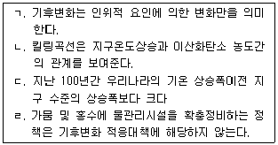
- ㄱ, ㄷ
- ㄴ, ㄷ
- ㄴ, ㄹ
- ㄱ, ㄹ
(정답률: 88%)
7. 기후변화가 우리나라 각 부문별 미치는 영향으로 가장 거리가 먼 것은?
- 생태계 부문에서는 남해안 식생이 아열대로 변화
- 생태계 부문에서는 쌀 수량이 남부와 중부에서는 감소하는 반면, 북부지역에서는 증가
- 생태계 부문에서는 서해안에서 냉수성 어종이 증가
- 농ㆍ축산 부문에서는 맥류의 안전재배지대 북상 및 수량 증가
(정답률: 79%)
8. 유엔 기후변화협약(UNFCC)과 관련된 기구가 아닌 것은?
- COP(Confrence of the Parties)
- SBI(Subsidiary Body for Implementation)
- CST(Committee on Science and Technology)
- SBSTA(Subsidiary Body for Scientific and Technological Advice)
(정답률: 86%)
9. 이산화탄소에 관한 설명으로 옳지 않은 것은?
- 하와이 마우나로아에서 처음으로 관측했다.
- 여름에 낮고 겨울에 높은 경향을 나타낸다.
- 우리나라 대표농도는 안면도 기후변화 감시센터에서 측정한 자료이다.
- 전 세계적으로 매년 8ppm씩 증가한다.
(정답률: 80%)
10. 온실가스에 관한 내용으로 거리가 먼 것은?
- 온실가스의 복사 강제력은 다른 기후 강제력에 비해 그 크기와 불확실성이 작다.
- 1999~2008년 동안 이산화탄소 농도의 일변동폭은 여름철이 겨울철 보다 크게 나타난다.
- 메탄의 농도는 산업혁명 이후 급격하게 증가하여 1990년 후반부터 증가 속도가 둔화되고 있으나 3차 산업의 발달로 2007년에는 전지구적인 평균농도가 150ppb정도로 산업화 이전과 유사한 농도를 나타낸다.
- 온실가스는 대기 중에 체류하는 시간이 길고 비교적 잘 혼합된다.
(정답률: 53%)
11. 부문별 관장기관이 생성한 국가 온실가스 배출통계를 최종확정하기까지의 절차를 순서대로 옳게 나열한 것은?
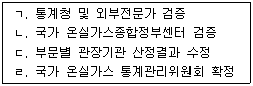
- ㄴ→ㄱ→ㄷ→ㄹ
- ㄴ→ㄷ→ㄹ→ㄱ
- ㄴ→ㄹ→ㄷ→ㄱ
- ㄱ→ㄴ→ㄹ→ㄷ
(정답률: 90%)
12. 다음 탄소 배출권의 종류에 관한 설명으로 옳지 않은 것은?
- AAU : 교토의정서 Annex 1 국가들에게 할당된 온실가스 배출권
- ERU : EU EST 하에서의 북미 국가들에게 할당된 배출권
- CER : 선진국과 개도국 간의 CDM을 통해서 발생되는 배출권
- RMU : 교통의정서에 명시된 토지이용, 토지이용변화 및 산림활동에 대한 온실가스 흡수원 관련 배출권
(정답률: 47%)
13. 우리나라는 국무총리실에서 범정부 기후변화 대책기구가 구성되면서 제1차 ~ 4차까지 기후변화 종합대책을 수립하였는데 이중 기후변화협약 이행기반구축, 부문별 온실가스 감축, 기후변화 적응기반 구축 등 3대 부문 91개 과제를 담고, 처음으로 기후변화 적응문제에 관심을 표명한 것은 제 몇 차 기후변화 종합대책에 해당하는가?
- 제1차(1999~2001)
- 제2차(2002~2004)
- 제3차(20⑤~2007)
- 제4차(2008~2012)
(정답률: 44%)
14. 지구 기후변화의 자연적인 관련 요인으로 가장 거리가 먼 것은?
- 가축의 증가
- 지구의 태양순환 주기
- 해양 해류흐름의 변화
- 몬순현상
(정답률: 86%)
15. 기후변화의 취약성과 영향에 관한 설명으로 가장 거리가 먼 것은?
- 기후변화의 영향이 높고 적응력이 낮은 경우 사회시스템의 기후변화 취약성은 높다고 볼 수 있다.
- 기후변화의 영향이 높고 적응력이 높을 경우 사회시스템은 발전의 기회를 가질 수 있다.
- 기후변화에 대한 영향과 적응력이 모두 낮을 경우 사회시스템은 잔여위험을 가질 수 있다.
- 기후변화의 영향이 낮고 적응력이 높을 경우 사회시스템은 지속가능한 발전을 하지 못한다.
(정답률: 75%)
16. 청정개발체제사업에서 배출권의 투명성과 신뢰성 있는 관리를 위하여 구성하고 운영하는 기구와 거리가 먼 것은?
- 적응기금(Adaptation Fund)
- 운영기구(Designated Operation Entity)
- 집행이사회(Executive Board)
- 국가승인기구((Designated National Authority)
(정답률: 74%)
17. 다음 온실가스의 지구온난화지수(GWP)로 옳지 않은 것은?
- CO2 - 1
- CH4 - 21
- N2O – 130
- SF6 - 23,900
(정답률: 84%)
18. 다음 중 지자체 기후변화 적응대책 수립을 위한 일반적인 행동요령으로 가장 거리가 먼 것은?
- 지역내 기후변화에 관심이 많은 영향력 있는 인물 탐색
- 적응전담 조직의 명확한 임무 설정
- 기후변화가 지역에 미치는 영향을 지속적으로 관찰
- 정성적보다 정량적인 취약성 평가 수행
(정답률: 53%)
19. “기후변화에 대한 정부간 패널(IPCC)” 의 실행그룹중 기후변화의 영향평가와 적응 및 취약성 분야의 역할을 담당하는 그룹명은?
- Working Group 1
- Working Group 2
- Working Group 3
- Working Group 4
(정답률: 74%)
20. 기후변화협약의 주요 내용으로 거리가 먼 것은?
- 온실가스 배출원 및 흡수원 목록을 포함하는 국가 보고서 작성 및 제출의무는 선진국에만 적용된다.
- 공통의 그러나 차별화된 책임의 원칙이 적용된다.
- 모든 당사국은 과학 및 조사연구 등 국제협력을 위해 노력해야 한다.
- 개도국의 특수한 사정을 배려한다.
(정답률: 82%)
2과목: 온실가스 배출의 이해
21. 대체 연료인 바이오 에탄올에 관한 내용으로 틀린 것은? (단, 온실가스ㆍ에너지 목표관리 운영 등에 관한 지침 기준)
- 가솔린 옥탄가를 높이는 첨가제로 사용한다.
- 연소율이 높고 오염물질 발생이 적은 장점이 있다.
- 추출가능한 원재료가 제한적이라는 단점이 있다.
- 기존 첨가제인 MTBE를 대체하는 용도로 사용한다.
(정답률: 77%)
22. 석유정제공장의 배출권 할당 방식으로 가장 적절한 것은?(오류 신고가 접수된 문제입니다. 반드시 정답과 해설을 확인하시기 바랍니다.)
- 그랜드 파더링
- 과거 3년 온실가스 배출량 총량 평균 값
- BAU
- CWB
(정답률: 14%)
23. 다음 중 합금철 생산공정에서 온실가스의 주된 배출 시설은? (단, 온실가스ㆍ에너지 목표관리 운영 등에 관한 지침 기준)
- 전로
- 배소로
- 소결로
- 용융ㆍ용해로
(정답률: 56%)
24. 매립지의 기능을 3가지로 대별한 구분으로 틀린 것은? (단, 온실가스ㆍ에너지 목표관리 운영 등에 관한 지침 기준)
- 저류기능
- 회복기능
- 차수기능
- 처리기능
(정답률: 83%)
25. 암모니아 생산 공정의 순서로 옳은 것은? (단, 온실가스ㆍ에너지 목표관리 운영 등에 관한 지침 기준)
- 수소제조공정→변성공정→탈황공정→이산화탄소제거 및 회수공정→메탄화공정→암모니아합성공정→암모니아 회수공정
- 수소제조공정→탈황공정→변성공정→이산화탄소제거 및 회수공정→메탄화공정→암모니아합성공정→암모니아 회수공정
- 탈황공정→변성공정→수소 제조공정→이산화탄소제거 및 회수공정→메탄화공정→암모니아합성공정→암모니아 회수공정
- 탈황공정→수소 제조공정→변성공정→이산화탄소제거 및 회수공정→메탄화공정→암모니아합성공정→암모니아 회수공정
(정답률: 53%)
26. 액체연료 중 잔사유에 관한 설명으로 틀린 것은? (단, 온실가스ㆍ에너지 목표관리 운영 등에 관한 지침 기준)
- 유틸리티, 산업시설 그리고 대형 상업용의 정교한 연소설비가 있는 곳에 주로 사용한다.
- 중질의 잔사유는 증류유보다 점성도가 더 크고 휘발성이 높아 취급이 어렵다.
- 중질의 잔사유는 적절한 분사를 하기 위하여 가열하여야 한다.
- 원유에서 경질유분을 제거한 후 만들기 때문에 상당량의 회분과 질소, 유황을 함유한다.
(정답률: 67%)
27. 전자 산업 공정중 웨이퍼 제조공정이 아닌 것은? (단, 온실가스ㆍ에너지 목표관리 운영 등에 관한 지침 기준)
- 성형
- 단결정 성장
- 절단
- 경면연마
(정답률: 48%)
28. 시멘트를 생산하는 공정 중에서 다량의 온실가스를 발생하는 시설(공정)로 옳은 것은? (단, 온실가스ㆍ에너지 목표관리 운영 등에 관한 지침 기준)
- 가스회수시설
- 소성시설
- 접촉 재질시설
- 세척시설
(정답률: 80%)
29. 다음 중 아연제련 생산공정이 아닌 것은? (단, 온실가스ㆍ에너지 목표관리 운영 등에 관한 지침 기준)
- 질산제조공정
- 용해공정
- 주조공정
- 배소공정
(정답률: 83%)
30. 다음 ( )안에 옳은 것은? (단, 온실가스ㆍ에너지 목표관리 운영 등에 관한 지침 기준)
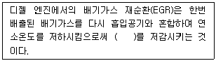
- SOx
- CO2
- NOx
- CH4
(정답률: 62%)
31. 고형 폐기물의 생물학적 처리 구분으로 틀린 것은? (단, 온실가스ㆍ에너지 목표관리 운영 등에 관한 지침 기준)
- 퇴비화
- 고도처리
- 유기 폐기물의 혐기성 소화
- 폐기물의 기계-생물학적(MB) 처리
(정답률: 73%)
32. 질산생산공정 중 촉매연소시 촉매반응을 저해하는 원인과 가장 거리가 먼 것은? (단, 온실가스ㆍ에너지 목표관리 운영 등에 관한 지침 기준)
- 대기오염으로 인한 독성 및 암모니아로부터의 오염
- 암모니아-공기 혼합 부족
- 마그네틱 필터 사용
- 촉매 부근의 가스 분포 부족
(정답률: 60%)
33. 연소시설의 에너지효율 증대 및 온실가스 배출량 저감을 위한 기술에 대한 설명 중 틀린 것은?
- 배기가스 폐열의 활용
- 가압가스의 에너지 회복을 위한 팽창 터빈의 사용
- 배출가스 온도의 저하로 배기가스에서의 낮은 CO 농도
- 잉여공기의 증가를 통한 배기가스 유량의 증가
(정답률: 69%)
34. 폐기물 소각에 따른 온실가스 배출 시설과 가장 거리가 먼 것은? (단, 온실가스ㆍ에너지 목표관리 운영 등에 관한 지침 기준)
- 소각보일러
- 열분해 소각시설
- 폐가스 소각시설
- 폐수 소각시설
(정답률: 32%)
35. 고정연소시설의 대기오염물질 방지시설인 배연탈황시설에 관한 내용으로 틀린 것은? (단, 온실가스ㆍ에너지 목표관리 운영 등에 관한 지침 기준)
- 습식탈황시설은 선택적 촉매와 비선택적 촉매로 구분된다.
- 습식탈황시설은 폐수처리 및 장치의 부식문제가 있다.
- 습식탈황시설은 초기 투자비가 크고 넓은 부지를 필요로 한다.
- 습식탈황시설은 기술적인 완성도 및 신뢰성에서 우수하다.
(정답률: 32%)
36. 철강생산공정 중 제선공정에 해당되지 않는 것은? (단, 온실가스ㆍ에너지 목표관리 운영 등에 관한 지침 기준)
- 소결 공정
- 전로공정
- 코크스 공정
- 고로 공정
(정답률: 34%)
37. 다음 중 “석유화학 제품 생산 배출시설” 과 가장 거리가 먼 것은?
- 수소 생산시설
- 나프타 분해시설
- 에틸렌옥사이드 생산시설
- 카본블랙 생산시설
(정답률: 69%)
38. 고정연소 온실가스 배출시설 중 공정연소 시설에 해당하지 않는 시설은? (단, 온실가스ㆍ에너지 목표관리 운영 등에 관한 지침 기준)
- 배연탈황시설
- 건조시설
- 가열시설
- 용융ㆍ융해시설
(정답률: 74%)
39. 혐기성 소화과정에서 발생되는 대표적인 온실가스는? (단, 온실가스ㆍ에너지 목표관리 운영 등에 관한 지침 기준)
- 일산화탄소
- 아산화질소
- 육불화황
- 메탄
(정답률: 69%)
40. 다음중 석유정제 공정을 크게 3단계로 구분할 때 이에 해당되지 않는 것은? (단, 온실가스ㆍ에너지 목표관리 운영 등에 관한 지침 기준)
- 분리
- 정제
- 배합
- 증류
(정답률: 58%)
3과목: 온실가스 산정과 데이터 품질관리
41. 온실가스ㆍ에너지 목표관리제 하에서 온실가스 측정 불확도 산정절차를 바르게 나열한 것은?
- 사전검토 → 불확도 산정 → 합성 불확도 산정 → 배출량 불확도 계산
- 사전검토 → 합성 불확도 산정 → 배출량 불확도 계산 → 불확도 산정
- 사전검토 → 배출량 불확도 계산 → 불확도 산정 → 합성 불확도 산정
- 사전검토 → 불확도 산정 → 배출량 불확도 계산 → 합성 불확도 산정
(정답률: 77%)
42. A씨는 하루 30L의 휘발류를 소모한다. 이로 인해 매일 A씨가 지구온난화에 기여하는 이산화탄소의 하루 동안의 배출총량은 얼마인가? (단, 휘발유의 비중은 0.75㎏/L, 순발열량은 44.3TJ/Gg, 차량용 휘발유의 CO2 배출계수는 69300㎏/TJ)
- 12㎏
- 23㎏
- 46㎏
- 69㎏
(정답률: 62%)
43. 온실가스ㆍ에너지 목표관리제 하에서 폐기물 소각에서의 온실가스 배출량 산정시 Tier 1의 배출계수를 적용할 경우 FCF값(화석탄소 함유율)이 0인 생활폐기물은?
- 섬유
- 플라스틱
- 음식물
- 고무
(정답률: 50%)
44. 관리업체인 A 매립장에서 고형폐기물의 매입에 따른 온실가스 배출량을 산정할 경우의 매개변수별 관리기준에 관한 설명으로 옳지 않은 것은?
- 메탄보정계수(MCF)는 IPCC 가이드라인 기본값을 적용한다.
- 폐기물 성상별 매립양은 1991년 1월 1일 이후 매립된 폐기물에 대해서만 수집한다.
- 메탄으로 전환가능한 DOC비율은 IPCC 가이드라인 기본값인 0.5를 적용한다.
- 산화율은 IPCC 가이드라인 기본계수를 사용한다.
(정답률: 80%)
45. 온실가스ㆍ에너지 목표관리제 하에서 오존파괴물질의 대체물질 사용시 폐쇄형 기포(closed-cell) 발포제에 의한 온실가스 배출량 산정에 요구되는 매개변수로만 옳게 나열된 것은?
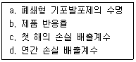
- b, c, d
- a, b, d
- a, c, d
- a, b, c
(정답률: 53%)
46. 온실가스 배출권 거래제 운영을 위한 검증지침에서 온실가스 배출량 검증방법에 관한 설명으로 옳지 않은 것은?
- “고유리스크” 는 검증대상 내부의 데이터 관리구조상 오류를 적발하지 못할 리스크를 말한다.
- 중요성 평가시 중요성의 양적기준치는 할당대상업체의 배출량 수준에 따라 차등화 한다.
- 검증기관은 “합리적 보증수준” 이 가능하도록 데이터 샘플링 계획을 수립하여야 한다.
- 검증계획 수립시 검증팀장은 수립된 검증계획을 최소 1주일 전에 피검증자에 통보하여 효율적인 검증이 실시 될 수 있도록 해야 한다.
(정답률: 73%)
47. 관리업체 A에서 1년 간 도시가스(LNG) 58,970Nm3을 사용했을 때 온실가스 배출량은? (단, 발열량과 배출계수는 아래 표 참조하고, 산화계수는 1.0을 적용)
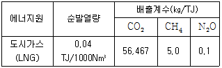
- 83.19tCO2-eq
- 96.24tCO2-eq
- 113.44tCO2-eq
- 133.51tCO2-eq
(정답률: 71%)
48. 관리업체 A의 하수처리 과정에서 다음과 같은 조건일 때 N2O 배출에 따른 온실가스 연간 배출량에 가장 가까운 값은? (단, 반출슬러지는 고려하지 않는다.)
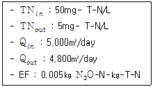
- 200tCO2 eq/yr
- 300tCO2 eq/yr
- 400tCO2 eq/yr
- 500200tCO2 eq/yr
(정답률: 53%)
49. 온실가스 배출권 거래제 운영을 위한 검증지침에서 검증계획 수립 시 주요 배출시설의 경우, 검증시간 배분등에 우선적으로 반영하여야 하는데, 이 주요 배출시설의 기준은?
- 온실가스 배출량의 총량대비 누적합계가 100분의 95를 차지하는 배출시설
- 온실가스 배출량의 총량대비 누적합계가 100분의 90를 차지하는 배출시설
- 온실가스 배출량의 총량대비 누적합계가 100분의 85를 차지하는 배출시설
- 온실가스 배출량의 총량대비 누적합계가 100분의 80를 차지하는 배출시설
(정답률: 56%)
50. 온실가스ㆍ에너지 목표관리제 하에서 산정등급(Tier)과 배출계수 적용에 관한 설명으로 가장 거리가 먼 것은?
- Tier 1 – IPCC 기본 배출계수 활용
- Tier 2 – 국가고유 배출계수 사용
- Tier 3 – 사업장ㆍ배출시설별 배출계수 사용
- Tier 4 – 전 세계 공통의 배출계수 사용
(정답률: 80%)
51. 온실가스ㆍ에너지 목표관리제 하에서 외부에서 공급된 열(스팀)의 사용에 대한 온실가스 배출량 산정방법에 관한 설명으로 옳지 않은 것은?
- 열(스팀) 사용으로 인해 발생하는 배출량은 열(스팀) 공급자로부터 간접배출계수를 제공받아 활용한다.
- 외부에서 공급된 열(스팀)사용으로 인해 발생하는 간접적 온실가스 배출은 관리업체의 온실가스 배출량에 포함되지 않는다.
- 관리업체가 소유 및 통제하는 설비와 사업활동에 의한 열(스팀)사용으로 인해 발생하난 간접적 온실가스 배출량에 포함되어야 한다.
- 열(스팀)을 생산하여 외부로 공급하는 업체가 자체적으로 열(스팀) 간접배출계수를 제공할 수 없는 경우에는 센터가 검증ㆍ공표하는 국가고유의 열(스팀) 간접배출계수 등을 활용할 수 있다.
(정답률: 59%)
52. 온실가스ㆍ에너지 목표관리제 하에서 고정연소시설에서의 CO2 배출량 산정시 Tier 2의 ㉠ 액체연료 산화계수와 ㉡ 기체연료의 산화계수로 옳은 것은?
- ㉠ 0.99, ㉡ 0.995
- ㉠ 1.0, ㉡ 0.99
- ㉠ 0.995, ㉡ 1.0
- ㉠ 0.98, ㉡ 0.99
(정답률: 77%)
53. 온실가스ㆍ에너지 목표관리제 하에서 다음과 같은 모니터링 유형에 대한 활동자료 산정방법에 관한 설명으로 가장 적합한 것은?
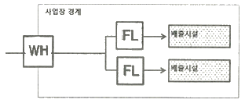
- 상거래를 목적으로 연료나 원료공급자가 설치ㆍ관리하는 측정기기의 계측자료는 참고자료로 활용할 수 없다.
- 주기적인 정도검사를 실시하는 내부측정기기가 같이 설치되어 있을 경우 활동자료를 수집하는 방법으로써, 배출시설에 다수의 교정된 측정기기가 부착된 경우, 교정된 자체 측정기기 값을 사용하는 것을 원칙으로 한다.
- 주기적인 정도검사를 실시하지 않는 내부 측정기기 값을 기준으로 배출시설별 활동자료를 결정한다.
- 구매한 연료 및 원료, 전력 및 열에너지를 정도검사를 받지 않은 내부 측정기기를 이용하여 활동자료를 분배ㆍ결정하는 방법이다.
(정답률: 65%)
54. 온실가스ㆍ에너지 목표관리제 하에서 기체연료를 고정연소하는 배출시설에 Tier 2를 적용할 경우 매개변수별 관리기준에 관한 설명으로 옳지 않은 것은?
- 활동자료는 사업자 또는 연료공급자에 의해 측정된 불확도 ±5.0%이내의 연료사용량 자료를 활용한다.
- 열량계수는 국가고유발열량값을 사용한다.
- 배출계수는 국가고유배출계수를 사용한다.
- 산화계수는 기본값인 1.0을 적용한다.
(정답률: 85%)
55. 다음은 온실가스ㆍ에너지 목표관리제 하에서 연속측정방법의 배출량 산정방법 및 측정기기의 설치ㆍ관리 기준중 굴뚝연속자동측정기와 배출가스유량계 측정자료의 수치 맺음 및 배출량 산정 기준이다. ( )안에 알맞은 것은?
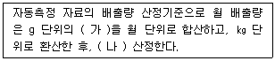
- 가 : 10분 배출량, 나 : 소수점 이하는 버림 처리하여 정수로
- 가 : 30분 배출량, 나 : 소수점 이하는 버림 처리하여 정수로
- 가 : 10분 배출량, 나 : 소수 둘째자리에서 반올림 처리하여 소수 첫째자리까지
- 가 : 30분 배출량, 나 : 소수 둘째자리에서 반올림 처리하여 소수 첫째자리까지
(정답률: 71%)
56. 온실가스ㆍ에너지 목표관리제 하에서 직접 배출원 중 원료나 연료의 생산, 중간생성물의 저장, 이송 과정에서 대기중으로 배출되는 배출원을 의미하는 것은?
- 고정연소배출
- 이동연소배출
- 탈루배출
- 공정배출
(정답률: 80%)
57. 목표관리 대상업체에서 근사법에 의한 모니터링방법을 적용할 경우에 관한 설명으로 옳지 않은 것은?
- 관리업체는 근사법을 사용할 수 밖에 없는 합당한 이유등을 모니터링 계획에 포함하여야 한다.
- 관리업체는 배출시설단위로 측정기기의 신규설치 및 정도검사 일정등을 모니터링 계획에 포함하여야 한다.
- 이동연소배출원(사업장에서 개별 차량별로 온실가스 배출량을 산정하는 경우를 의미한다)에는 근사법에 의한 모니터링을 적용할 수 없다.
- 식당 LPG, 비상발전기에는 근사법에 의한 모니터링을 적용할 수 있다.
(정답률: 57%)
58. 온실가스ㆍ에너지 목표관리제 하에서 사업장ㆍ배출시설 및 감축기술단위의 배출계수 등 상당부분 시험ㆍ분석을 통하여 개발한 매개변수 값을 활용하는 배출량 산정방법론에 해당하는 것은?
- Tier 1
- Tier 2
- Tier 3
- Tier 4
(정답률: 62%)
59. 온실가스ㆍ에너지 목표관리제 하에서 관리업체 지정과 관련하여 건물이 건축물 대장 또는 등기부에 각각 등재되어 있거나 소유지분을 달리하고 있는 경우에 관한 사항으로 옳지 않은 것은?
- 인접한 대지에 동일 법인이 여러 건물을 소유한 경우에는 한 건물로 본다.
- 건물의 소유구분이 지분형식으로 되어 있을 경우에는 지분별로 건물의 소유지분을 구분한다.
- 에너지 관리의 연계성이 있는 복수의 건물은 한 건물로 본다.
- 동일부지내 있거나 인접 또는 연접한 집합건물이 동일한 조직에 의해 에너지 공급ㆍ관리 또는 온실가스 관리 등을 받을 경우에도 한 건물로 간주한다.
(정답률: 69%)
60. 온실가스ㆍ에너지 목표관리제 하에서 온실가스 배출량 등의 산정절차를 순서대로 나열한 것으로 옳은 것은?
- 조직 경계의 설정→ 모니터링 유형 및 방법의 설정 → 배출활동별 배출량 산정방법론 선택 → 배출량 산정 및 모니터링 체계의 구축
- 배출량 산정 및 모니터링 체계의 구축 → 조직경계의 설정 → 모니터링 유형 및 방법의 설정 → 배출활동별 배출량 산정방법론 선택
- 모니터링 유형 및 방법의 설정→ 조직경제의 설정 → 배출량 산정 및 모니터링 체계의 구축 → 배출활동별 배출량 산정방법론 선택
- 조직 경계의 설정 →모니터링 유형 및 방법의 설정→ 배출량 산정 및 모니터링 체계의 구축 → 배출활동별 배출량 산정방법론 선택
(정답률: 50%)
4과목: 온실가스 감축관리
61. 감축프로젝트를 기획하고자 하는 A회사가 100tCO2-eq의 감축의무 달성을 위해 내부적으로 가능한 감축프로젝트를 조사한 결과, 총 1,000,000원이 소요되는 A1 투자안이 존재하는 것으로 조사되었다. 이러한 투자를 통해 감축되는 온실가스는 총 100tCO2-eq이며, 에너지 및 생산효율 증가로 인해 총 100,000원의 별도수익이 예상된다. 한편 배출거래제도 하에서 배출권 가격은 10,000원/tCO2-eq에 형성되었다고 할 때 A회사의 단위당 (가)감축단가와, (나)해당사업성 검토(타당성)가 가장 적합하게 짝지어진 것은? (단, 배출권 가격변동 등에 대한 기타사항은 고려하지 않는다.)
- (가) 9,000원/tCO2-eq, (나) 사업 기각
- (가) 9,000원/tCO2-eq, (나) 사업 수행
- (가) 10,000원/tCO2-eq, (나) 사업 기각
- (가) 10,000원/tCO2-eq, (나) 사업 수행
(정답률: 48%)
62. CCS(Carbon Capture and Storage)에 대한 설명으로 가장 거리가 먼 것은?
- CO2를 배출하는 모든 부문에 적용할 수 있으나, 특성상 CO2 배출농도가 높고, 배출량이 많은 분야에 우선 적용이 가능하다.
- 화력발전소는 CO2 배출밀도(시간당 배출량)가 높기 때문에 CO2 회수ㆍ처리비용 및 기술 타당성에 있어서 적용이 적합하다.
- CCS 기술은 발전소 및 각종 산업에서 발생하는 CO2를 대기로 배출시키기 전에 고농도로 포집ㆍ압축ㆍ수송하여 안전하게 저장하는 기술이다.
- CO2 제거 측면에서 효율은 높지 않지만 반면에 처리비용이 저렴하다.
(정답률: 77%)
63. 온실가스 배출권거래제 하에서 승인대상 외부감축사업의 승인기준으로 거리가 먼 것은?
- 외부감축실적은 지속적이고 정량화되어 검증 가능하여야 한다.
- 일반적인 경영여건에서 실시할 수 있는 행동을 넘어서는 추가적인 행동 및 조치에 따른 감축이 발생되어야 한다.
- 승인대상 외부사업은 온실가스 감축량의 최소규모를 배출허용총량의 10% 이내로 제한한다.
- 외부사업은 배출량 인증위원회에서 승인한 방법론을 적용해야 한다.
(정답률: 50%)
64. 다음 온실가스 감축방법 중 간접 감축방법에 해당하는 것은 ?
- 신재생에너지 적용
- 대체물질 적용
- 온실가스 활용
- 공정 개선
(정답률: 77%)
65. 다음 중 이산화탄소 저장 선택지로 가장 적절치 않은 곳은?
- 고갈된 폐유전
- 심부의 대염수층
- 노천탄광
- 내륙 심부 폐탄광층
(정답률: 74%)
66. 온실가스 감축을 위한 경제성 평가방법 중 ( )안에 가장 적합한 것은?
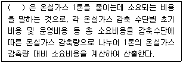
- 한계저감비용
- 효과비용
- 투자비용
- 감축비용
(정답률: 75%)
67. 자동차 "가솔린엔진" 에서의 온실가스 저감기술과 가장 거리가 먼 것은?
- 페이저 시스템(Cam Phaser Systems)
- 실린더 디액티베이션(Cylinder Deactivation)
- 가솔린 직접분사
- 고압연료분사시스템
(정답률: 42%)
68. A발전소는 일일 10MW 용량의 태양광 발전소를 CDM 사업으로 추진하고자 한다. 발전효율이 12%일 때, 연간 온실가스 감축량(CERs)은 얼마인가? (단, 전력배출계수값은 0.46625tCO2-eq/MWh)
- 0.6 CERs
- 204.2 CERs
- 847.4 CERs
- 1701.8 CERs
(정답률: 50%)
69. 다음은 CDM 사업관련 주요기관 중 새로운 베이스라인 및 모니터링 방법론 승인과 각종 절차와 방법, 가이드라인 결정 전 최소 8주간 정도의 의견수렴 등의 세부역할을 이행하는 기관은?
- 국가CDM 승인기구(DNA)
- CDM 집행위원회(EB)
- CDM 사업운영기구(DOE)
- 당사국총회(COP/MOP)
(정답률: 54%)
70. 이산화탄소 저장기술은 해양저장, 지중저장, 지표저장 등으로 구분할 수 있다. 이중 해양저장은 이 국제협약(또는 의정서)에 의해 이산화탄소가 해양폐기물로 정의됨에 적당한 저장방법이 될 수 없는데, 다음중 위와 관련된 국제협약(또는 의정서)은 ?
- 바젤협약
- 런던협약
- 헬싱키의정서
- 몬트리올의정서
(정답률: 53%)
71. 온실가스 간접 감축방법에 해당하는 태양열시스템의 주요 구성요소와 거리가 먼 것은?
- 단열부
- 축열부
- 이용부
- 집열부
(정답률: 73%)
72. 휘발유를 이용하는 스파크 점화(SI, Spark Ignition)엔진과 경유를 이용한 압축착화(CI,Compression Ignition) 엔진의 장점이 혼합된 개념의 저감기술은?
- 터보차징/ 다운사이징 가솔린 엔진
- 과급착화기술
- 가솔린 직접분사
- 예ㆍ혼합 압축착화 연소
(정답률: 65%)
73. 해안지역에 시간당1MW 규모의 풍력발전소를 건설하여 전력생산을 CDM사업으로 추진하려고 한다. 풍력발전의 이용율은 20%이고, 생산된 전력은 모두 전력계통으로 공급된다고 가정할 때, 이 사업에 의한 연간 온실가스 감축량은? (단, 전력계통의 온실가스 배출계수는 0.8CO2톤/MWh, 풍력발전소 자체 전기사용량 무시, 1톤 이하 온실가스 감축량도 무시한다.)
- 1402 CO2톤/년
- 1523 CO2톤/년
- 1658 CO2톤/년
- 1773 CO2톤/년
(정답률: 63%)
74. 시멘트생산공정에서 온실가스를 감축시키는 방법과 거리가 먼 것은?
- 가스 바이패스(Gas bypass)를 최소화 한다.
- 시멘트 성분중 클링커 함량을 줄인다.
- 원료와 연료의 수분함량을 줄인다.
- 석탄을 대체하여 폐타이어를 연료로 이용한다.
(정답률: 43%)
75. 관리업체인 A시멘트회사의 2013년 온실가스 배출량은 165,000tCO2-eq으로 기준년도 대비 10% 증가하였고, 2020년에 기준년도 대비 50%의 예상 성장률을 기대할 경우, A시멘트 회사의 2020년 온실가스 배출허용량은? (단, 2020년 시멘트 업종 감축계수 0.81)
- 133,650tCO2-eq
- 182,250tCO2-eq
- 200,475tCO2-eq
- 220,525/tCO2-eq
(정답률: 54%)
76. 다음 중 감축목표 설정의 원칙과 가장 거리가 먼 것은?
- 목표의 설정 방법과 수준 등은 관리업체가 예측할 수 있도록 가능한 범위에서 사후에 공표되어야 한다.
- 목표의 협의 및 설정은 다수 이해관계자들의 신뢰를 확보할 수 있도록 투명하게 진행되어야 한다.
- 관리업체의 과거 온실가스배출량과 에너지 사용량의 이력을 적절하게 반영하여야 한다.
- 관리업체의 신ㆍ증설 계획과 국제경쟁력 등을 적절하게 고려하여야 한다.
(정답률: 69%)
77. A식품회사의 공장에 있는 노후된 전기모터를 고효율 전기모터로 교체하려고 한다. 아래조건을 적용한다면 A식품회사의 고효율 전기모터 교체로 인한 예상 온실가스 감축량은?
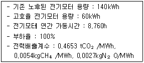
- 176 tCO2-eq
- 244 tCO2-eq
- 327 tCO2-eq
- 570 tCO2-eq
(정답률: 53%)
78. 다음 중 온실가스 감축 효과가 가장 큰 것은?
- 이산화탄소 1000톤 감축
- 메탄 150톤 감축
- 아산화질소 25톤 감축
- 육불화황 1톤 감축
(정답률: 70%)
79. 온실가스 감축프로젝트에 대한 경제성 분석 평가시 비용편익분석에 있어서 적용되는 판단의 기준으로 건리가 먼 것은?
- NPV(Net Present Value)
- Benefit Cost Ratio
- IRR(Internal Rate of Return)
- RMU(Removal Unit)
(정답률: 73%)
80. 합성불확도 산정방법인 몬테카를로 시뮬레이션(Tier 2)을 사용하기에 적절한 경우와 가장 거리가 먼 것은?
- 불확도가 작은 경우
- 알고리즘이 복잡한 경우
- 인벤토리가 작성된 연도별로 불확도가 다를 경우
- 분포가 정규분포를 따르지 않은 경우
(정답률: 65%)
5과목: 온실가스관련 법규
81. 온실가스 배출권 거래제 하에서 배출권의 절부를 무상으로 할당할 수 있는 업종에 대한 기준으로 옳은 것은? (단, 매 계획기간마다 평가하여 할당계획에서 정함)
- 무역집약도가 100분의 5 이상이고, 생산비용 발생도가 100분의 10 이상인 업종
- 무역집약도가 100분의 10 이상이고, 생산비용 발생도가 100분의 5 이상인 업종
- 무역집약도가 100분의 10 이상이고, 생산비용 발생도가 100분의 20 이상인 업종
- 무역집약도가 100분의 20 이상이고, 생산비용 발생도가 100분의 10 이상인 업종
(정답률: 56%)
82. 온실가스 배출권 거래제 하에서 배출권거래제 기본계획을 수립하여야 하는 자는?
- 기획재정부장관
- 산업통상자원부장관
- 국무총리
- 환경부장관
(정답률: 57%)
83. 중앙행정기관 등의 장은 해당연도 온실가스 감축 및 에너지절약에 관한 목표 이행계획을 전자적 방식으로 온실가스 종합정보센터에 매년 언제까지 제출하여야 하는가?
- 1월 31까지
- 3월 31까지
- 6월 30까지
- 9월 30까지
(정답률: 37%)
84. 정부가 수립해야 하는 기후변화 대응 기본계획의 수립ㆍ시행 주기는?
- 1년
- 3년
- 5년
- 10년
(정답률: 71%)
85. 온실가스ㆍ에너지 목표관리 운영에 있어서 관리업체가 관장기관의 지정고시에 이의가 있는 경우 이의신청을 할 수 있는 기간기준은?
- 고시된 날부터 15일 이내
- 고시된 날부터 30일 이내
- 고시된 날부터 60일 이내
- 고시된 날부터 90일 이내
(정답률: 67%)
86. 온실가스 배출권 거래제에서 할당대상업체가 주무관청에 제출한 배출권이 인증한 온실가스 배출량보다 적은 경우에 그 부족한 부분에 대하여 부과할 수 있는 과징금 부과 기준으로 옳은 것은?
- 이산화탄소 1톤당 5만원의 범위에서 해당 이행연도의 배출권 평균 시장가격의 3배 이하
- 이산화탄소 1톤당 10만원의 범위에서 해당 이행연도의 배출권 평균 시장가격의 3배 이하
- 이산화탄소 1톤당 5만원의 범위에서 해당 이행연도의 배출권 평균 시장가격의 5배 이하
- 이산화탄소 1톤당 10만원의 범위에서 해당 이행연도의 배출권 평균 시장가격의 5배 이하
(정답률: 74%)
87. 저탄소 녹색성장 추진의 기본원칙에 해당하지 않는 것은?
- 정부는 시장기능을 최대한 활성화하여 정부가 주도하는 저탄소 녹색성장 추진
- 정부는 녹색기술과 녹색산업을 경제성장의 핵심 동력으로 삼고 새로운 일자리를 창출ㆍ확대할 수 있는 새로운 경제체계 구축
- 정부는 사회ㆍ경제 활동에서 에너지와 자원 이용의 효율성을 높이고 자원순환 촉진
- 정부는 국가의 자원을 효율적으로 사용하기 위하여 성장 잠재력과 경쟁력이 높은 녹색기술 및 녹색산업 분야에 대한 중점투자 및 지원 강화
(정답률: 56%)
88. 온실가스ㆍ에너지 목표관리 운영에 있어 부문별 관장기관은 환경부장관의 확인을 거쳐 매년 언제까지 소관 관리업체를 관보에 고시하여야 하는가?
- 매년 1월 31일
- 매년 3월 31일
- 매년 6월 30일
- 매년 12월 31일
(정답률: 56%)
89. 온실가스 배출권 거래제에서 과징금 체납에 따른 가산금은 납부기한이 지난 날부터 1개월이 지날 때 마다 체납된 과징금의 얼마를 징수하는가?
- 1백분의 5일
- 1백분의 10
- 1백분의 12
- 1백분의 22
(정답률: 60%)
90. 녹색성장 위원회 소속으로 옳은 것은?
- 대통령 직속
- 국무총리 소속
- 국토교통부 소속
- 환경부 소속
(정답률: 65%)
91. 온실가스 배출권 거래제 하에서 배출권 할당위원회에 관한 설명으로 틀린 것은?
- 배출권 할당위원회에 위촉된 위원의 임기 2년으로 하며, 한 차례만 연임할 수 있다.
- 배출권 할당위원회는 할당계획, 시장 안정화 조치 등의 사항을 심의ㆍ조정하기 위하여 환경부에 둔다.
- 배출권 할당위원회의 회의는 재적위원 과반수 출석으로 개의하고, 출석위원의 과반수 찬성으로 의결한다.
- 배출권 할당위원회의 회의는 할당위원회의 위원장이 필요하다고 인정하거나 재적위원의 3분의 1 이상이 요구할 때에 개최한다.
(정답률: 57%)
92. 온실가스ㆍ에너지 목표관리 운영 등에 관한 지침에서 사용하는 용어의 뜻으로 틀린 것은?
- “배출활동” 이란 온실가스를 배출하거나 에너지를 소비하는 일련의 활동을 만한다.
- “기준연도” 란 온실가스 배출량 등의관련정보를 비교하기 위해 지정한 과거의 특정기간에 해당하는 연도를 말한다.
- “연소배출” 이란 연료 또는 물질을 연소함으로써 발생하는 온실가스 배출을 말한다.
- “적격성” 이란 검증에 필요한 물질이 온실가스로 적정하게 변화되는 것을 말한다.
(정답률: 69%)
93. 다음 부문별 관장기관이 담당하는 사항이 아닌 것은?
- 이행실적 및 명세서의 확인
- 검증기관의 지정·관리, 검증심사원 교육 및 양성
- 관리업체에 대한 온실가스 감축, 에너지 절약 등 목표의 설정
- 관리업체의 선정·지정·관리 및 필요한 조치등에 관한 사항
(정답률: 65%)
94. 다음은 온실가스 감축 국가목표 설정에 관한 내용이다. ( )안에 옳은 내용은?
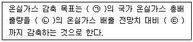
- ㉠ 2020년, ㉡ 2020년, ㉢ 100분의 20
- ㉠ 2020년, ㉡ 2020년, ㉢ 100분의 30
- ㉠ 2030년, ㉡ 2030년, ㉢ 100분의 20
- ㉠ 2030년, ㉡ 2030년, ㉢ 100분의 30
(정답률: 65%)
95. 온실가스 배출권 거래제 하에서 배출권거래제 할당 대상업체로 지정·고시하는 기준으로 옳은 것은?
- 관리업체 중 최근 3년간 온실가스 배출량의 연평균 총량이 100,000tCO2-eq 이상인 업체이거나 25,000tCO2-eq이상인 사업장의 해당 업체
- 관리업체 중 최근 3년간 온실가스 배출량의 연평균 총량이 125,000tCO2-eq 이상인 업체이거나 25,000tCO2-eq이상인 사업장의 해당 업체
- 관리업체 중 최근 3년간 온실가스 배출량의 연평균 총량이 1500,000tCO2-eq 이상인 업체이거나 25,000tCO2-eq이상인 사업장의 해당 업체
- 관리업체 중 최근 3년간 온실가스 배출량의 연평균 총량이 175,000tCO2-eq 이상인 업체이거나 25,000tCO2-eq이상인 사업장의 해당 업체
(정답률: 73%)
96. 온실가스ㆍ에너지 목표관리 운영에 있어서 배출시설의 배출량 규모에 따른 산정등급(Tier) 분류 기준에서 A그룹에 해당하는 것은?
- 연간 5만톤 미만의 배출시설
- 연간 15만톤 이상의 배출시설
- 연간 5만톤 이상, 연간 50만톤 미만의 배출시설
- 연간 50만톤 이상의 배출시설
(정답률: 80%)
97. 국가 온실가스 종합정보관리 체계의 구축 및 관리에 대한 내용으로 옳지 않은 것은?
- 국가 온실가스 종합정보관리체계를 구축, 관리하기 위하여 환경부장관 소속으로 온실가스 종합정보센터를 둔다.
- 온실가스 종합정보센터는 검증기관의 지정, 관리, 검증심사사원 교육 및 양성을 관장한다.
- 온실가스 종합정보센터는 국가 및 부문별 온실가스 감축 목표 설정의 지원을 관장한다.
- 온실가스 종합정보센터는 국내외 온실가스 감축지원을 위한 조사ㆍ연구를 관장한다.
(정답률: 45%)
98. 저탄소 녹색성장 기본법에서 수행 주체별 책무로서 적절하지 않은 것은?
- 국가는 각종 정책을 수립할 때 경제와 환경의 조화로운 발전 및 기후변화에 미치는 영향 등을 종합적으로 고려하여야 한다.
- 지방자치단체는 저탄소 녹색성장대책을 수립ㆍ시행할 때 해당 지방자치단체의 지역적 특성과 여건을 고려하여야 한다.
- 사업자는 기업의 녹색경영에 관심을 기울이고 녹색제품의 소비 및 서비스 이용을 증대함으로써 기업의 녹색경영을 촉진한다.
- 국민은 가정과 학교 및 직장 등에서 녹색생활을 적극 실천하여야 한다.
(정답률: 65%)
99. 다음은 녹색산업투자회사 설립에 관한 내용이다. ( )안에 가장 적합한 것은?
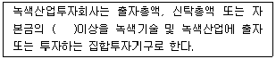
- 100분의 50
- 100분의 60
- 100분의 70
- 100분의 80
(정답률: 50%)
100. 온실가스ㆍ에너지 목표관리 운영에 있어서 부문별 관장기관은 관리업체가 목표달성을 못하거나, 제출한 이행실적이 미흡한 경우에는 개선명령 등 관리업체에 대해 필요한 조치를 할 경우 그 사실을 누구에게 즉시 통보하여야 하는가?
- 대통령
- 국무총리
- 기획재정부장관
- 환경부장관
(정답률: 83%)